Sigasi: VS Code Extension สุดเทพสำหรับคนเขียน VHDL/Verilog
สำหรับนักออกแบบฮาร์ดแวร์ที่ใช้ภาษา VHDL หรือ Verilog ในการทำงาน คงจะคุ้นเคยกับความท้าทายในการเขียนและตรวจสอบโค้ดที่ซับซ้อน วันนี้จะมาแนะนำเครื่องมือที่จะทำให้ชีวิตง่ายขึ้น นั่นคือ Sigasi ซึ่งเป็น Extension บน Visual Studio Code ครับ
พูดง่ายๆ Sigasi คือเครื่องมือวิเคราะห์โค้ด (Static Analysis & Linting) ที่ช่วยตรวจสอบ, หาข้อผิดพลาดที่อาจเกิดขึ้น, และแสดงโครงสร้างของโค้ด VHDL/Verilog/SystemVerilog ได้แบบเรียลไทม์ ทำให้เราเห็นปัญหาและแก้ไขได้ทันทีตั้งแต่ตอนเขียนโค้ด โดยไม่ต้องรอไปถึงขั้นตอนการคอมไพล์
การติดตั้ง (Installation)
- เปิด Visual Studio Code แล้วไปที่หน้า Extensions (Ctrl+Shift+X)
- ค้นหาคำว่า
sigasiแล้วกด Install
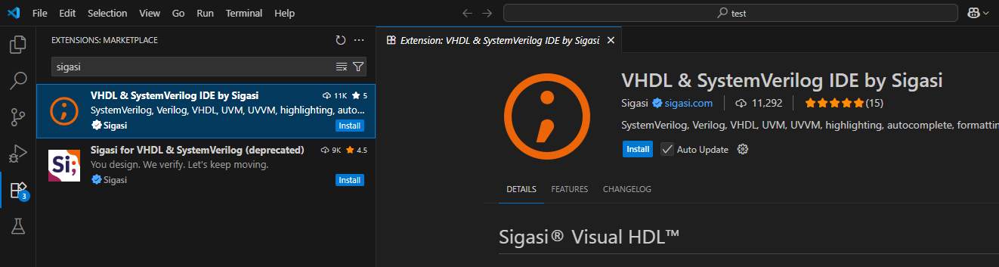
- หลังติดตั้งเสร็จ ให้เปิด Command Palette (Ctrl+Shift+P) แล้วพิมพ์
Sigasi: Enable TalkbackและSigasi: Use Community Editionเพื่อเปิดใช้งานเวอร์ชันฟรี
Note: Sigasi อนุญาตให้ใช้งานได้ฟรีสำหรับโปรเจกต์ที่ไม่ใช่เชิงพาณิชย์ (non-commercial use)
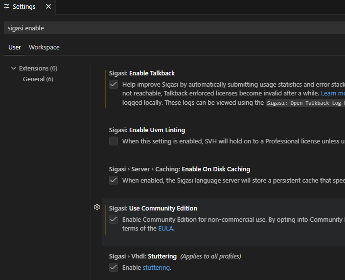
การสร้างโปรเจกต์ (Create Project)
เพื่อให้ Sigasi รู้จักไฟล์ทั้งหมดในโปรเจกต์ของเรา เราต้องสร้าง Project ขึ้นมาก่อน
- เปิดโฟลเดอร์โปรเจกต์ของเราผ่าน
File -> Open Folder... - คลิกที่ไอคอน Sigasi ด้านซ้ายมือ แล้วเลือก Create or Open Project.
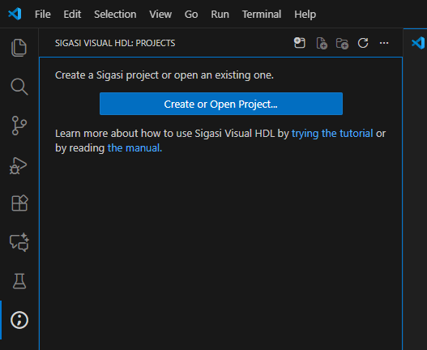
- จากนั้นคลิกขวาที่โฟลเดอร์หรือไฟล์ VHDL ของเรา แล้วเลือก Add to Library -> work Sigasi จะเริ่มทำการวิเคราะห์ไฟล์ทั้งหมดที่อยู่ใน Library
work
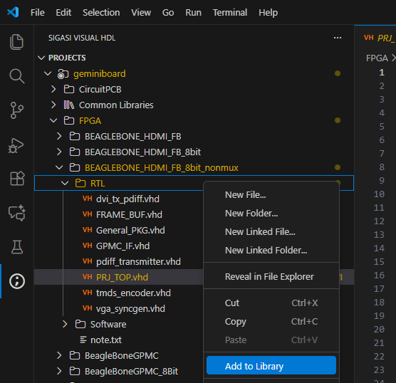
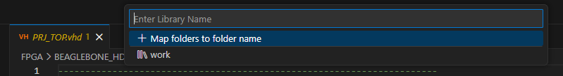
ฟีเจอร์เด่นที่น่าสนใจ
1. Design Hierarchy
เราสามารถดูโครงสร้างการออกแบบทั้งหมดได้ โดยไปที่ Top-level ของเรา แล้วเลือก Set as Design Hierarchy Top Sigasi จะแสดง Design Hierarchy ขึ้นมา ทำให้เราเห็นภาพรวมและไล่ดูโค้ดในแต่ละลำดับชั้นได้สะดวกมาก
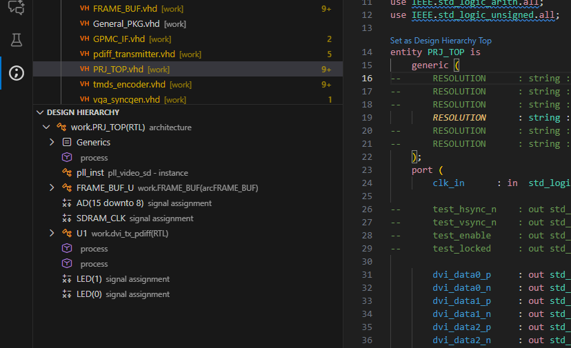
2. Block Diagram View
ฟีเจอร์นี้จะช่วยแปลงโค้ดของเราให้กลายเป็น Block Diagram ทำให้เห็นภาพการเชื่อมต่อ Port และ Signal ภายใน Entity นั้นๆ ได้ชัดเจนขึ้น สามารถเปิดดูได้โดยการคลิกที่ไอคอน Open Block Diagram ที่มุมบนขวาของหน้าต่างโค้ด
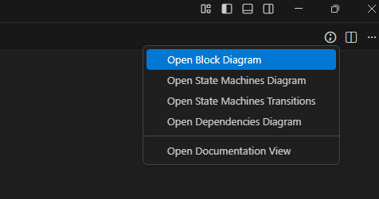

3. Dependency View
หากต้องการดูว่าไฟล์แต่ละไฟล์ในโปรเจกต์มีความเกี่ยวข้องกันอย่างไร ไฟล์ไหนเรียกใช้ไฟล์ไหนบ้าง สามารถเปิด Open Dependency Diagram เพื่อดูแผนภาพความสัมพันธ์ของไฟล์ทั้งหมดได้
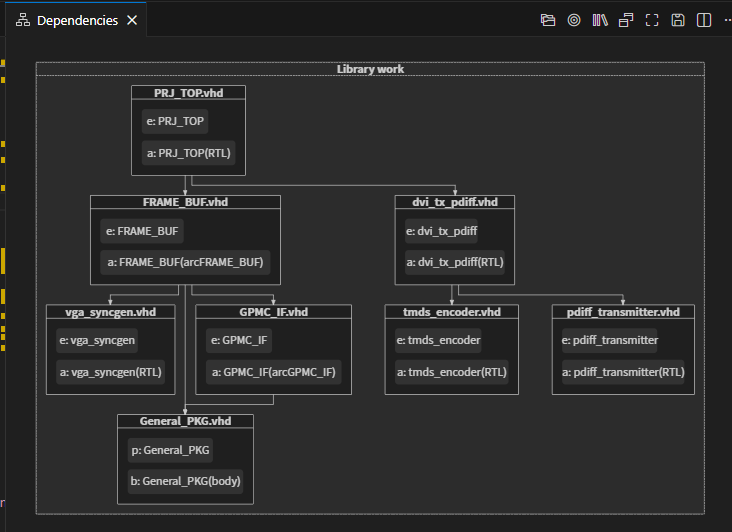
4. State Machines View
สำหรับคนที่ออกแบบวงจรแบบ State Machine ฟีเจอร์นี้มีประโยชน์มาก Sigasi สามารถถอดโค้ด State Machine ของเราออกมาเป็นแผนภาพ (State Diagram) ให้ดูได้ ทำให้ตรวจสอบและดีบัก Logic ได้ง่ายขึ้น โดยคลิกที่ Open State Machines Diagram
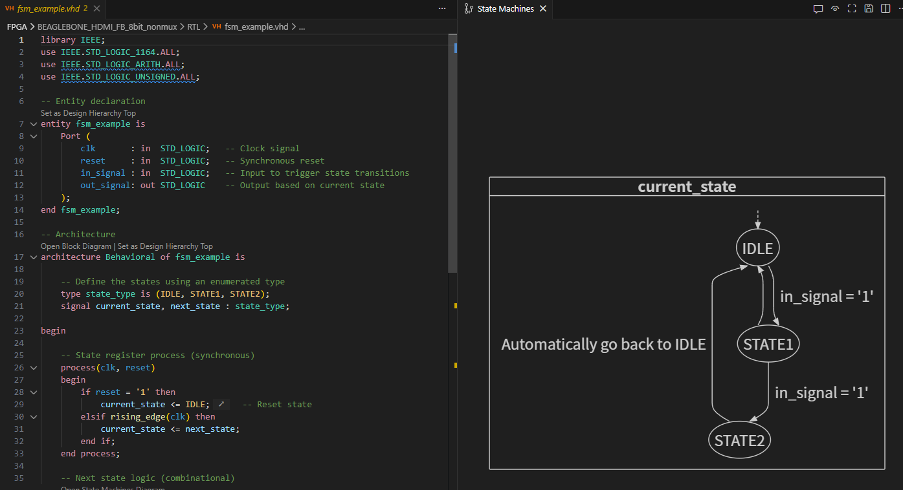
5. Code Check (VHDL Linting)
นี่คือ Highlight ที่อยากจะแนะนำเลยครับ เราสามารถเปิดหน้าต่าง Problems (ใช้คีย์ลัด Ctrl+Shift+M) เพื่อดูรายการแจ้งเตือนทั้งหมดที่ Sigasi ตรวจพบในโค้ดของเรา
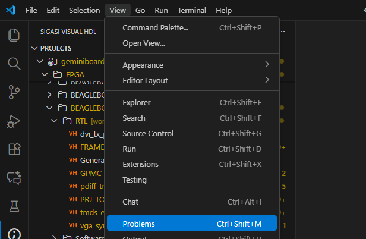
Sigasi จะแบ่งระดับความรุนแรงของปัญหา (Severity) ออกเป็น 4 ประเภท คือ Error, Warning, Info, และ Ignore ซึ่งเราสามารถปรับแต่งเองได้อีกที
ตัวอย่างที่ 1: Unused Declaration
หากเราประกาศ constant, signal หรือ variable ไว้แต่ไม่ได้เรียกใช้ Sigasi จะแจ้งเตือนเป็น Warning ขึ้นมา
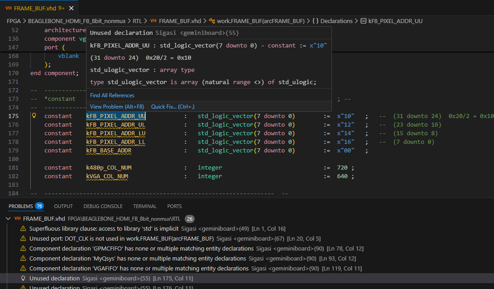
เราสามารถปรับเปลี่ยนระดับความรุนแรงของ Rule นี้ได้ เช่น ถ้าเรามองว่าการมีโค้ดที่ไม่ได้ใช้เป็นเรื่องร้ายแรง ก็สามารถปรับให้แจ้งเป็น Error แทนได้
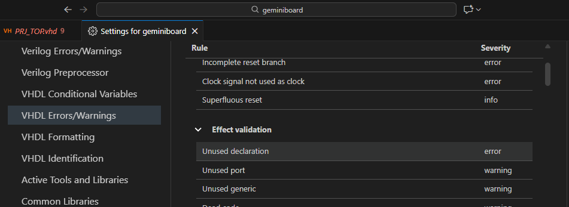
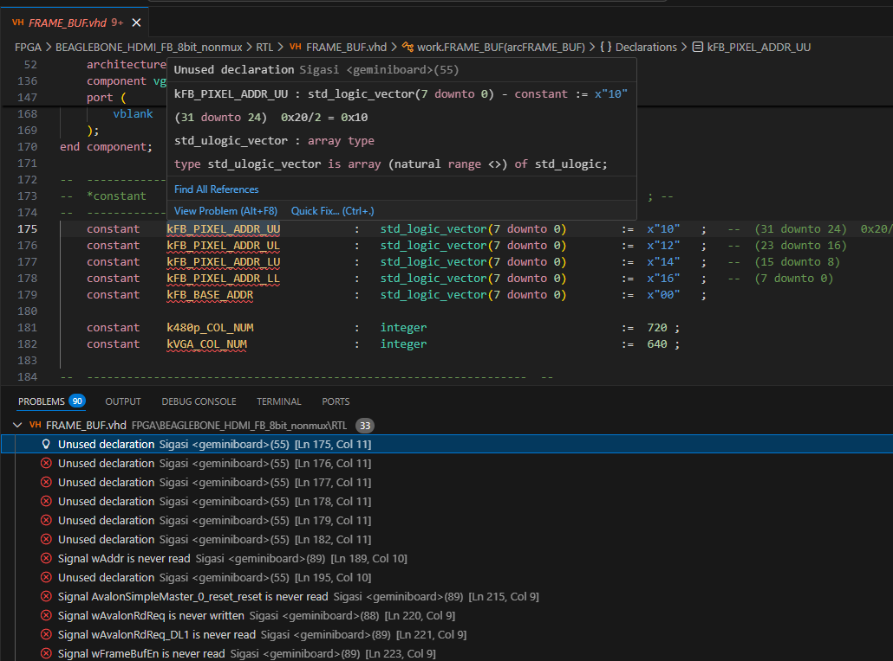
นอกจากนี้ เมื่อคลิกที่ปัญหา จะมีตัวเลือก Quick Fix ให้ใช้งาน:
- Remove: ลบโค้ดส่วนนั้นทิ้งไป
- Suppress: เก็บโค้ดไว้ แต่เพิ่ม Comment
-- @suppressเพื่อบอกให้ Sigasi ไม่ต้องแจ้งเตือนปัญหานี้อีก - Configure rule: ไปยังหน้า Settings เพื่อตั้งค่า Rule นั้นๆ
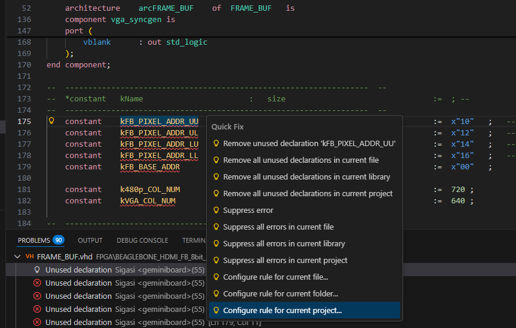
ภาพด้านล่างคือตัวอย่างหลังจากการใช้ Suppress เพื่อแก้ปัญหา
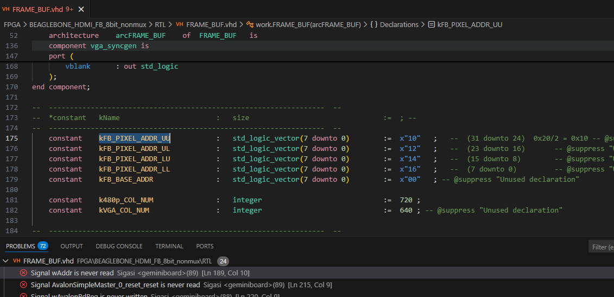
ตัวอย่างที่ 2: Incomplete Sensitivity List (Rule 72)
นี่เป็นข้อผิดพลาดสุดคลาสสิกที่เจอบ่อยมาก คือการลืมใส่ Signal ที่มีผลต่อ Process ไว้ใน Sensitivity List ซึ่งอาจทำให้ผลการสังเคราะห์วงจรผิดพลาดได้ Sigasi จะช่วยแจ้งเตือนปัญหานี้ให้ทันที
ในตัวอย่างด้านล่าง โค้ดมีการใช้ RST_L ใน process แต่ไม่ได้ใส่ไว้ใน sensitivity list Sigasi จึงแจ้งเตือนขึ้นมา
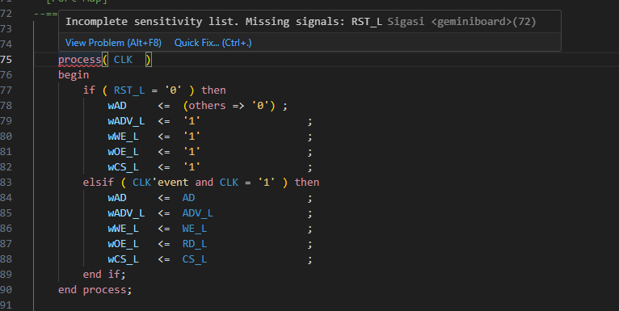
ตัวอย่างที่ 3: Deep Nesting (Rule 239)
การเขียน if-else หรือ case ซ้อนกันลึกเกินไป จะส่งผลให้ Logic ที่สังเคราะห์ออกมามี Path Delay สูงและอาจทำงานได้ช้า โดยปกติ Sigasi จะตั้งค่า Default ไว้ที่ 5 ชั้น หากมีการเขียนซ้อนกันลึกกว่านั้น ก็จะแสดงคำเตือนขึ้นมา

เราสามารถดูรายการ Rules ทั้งหมดที่ Sigasi ใช้ตรวจสอบได้ที่นี่: Sigasi VHDL Linting Rules
Note
ย้ำอีกครั้งว่า Extension ตัวนี้เป็น Community Edition ซึ่งอนุญาตให้ใช้ได้ฟรีสำหรับงานส่วนตัวและการศึกษาเท่านั้น (non-commercial use) หากต้องการนำไปใช้ในที่ทำงาน ให้เช็คกับทางบริษัทด้วยนะครับ